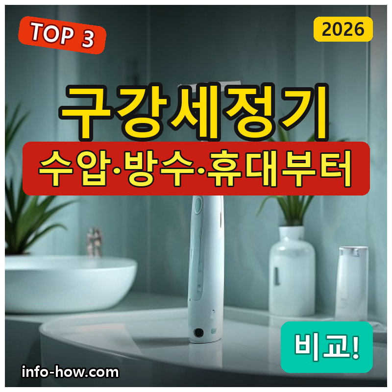
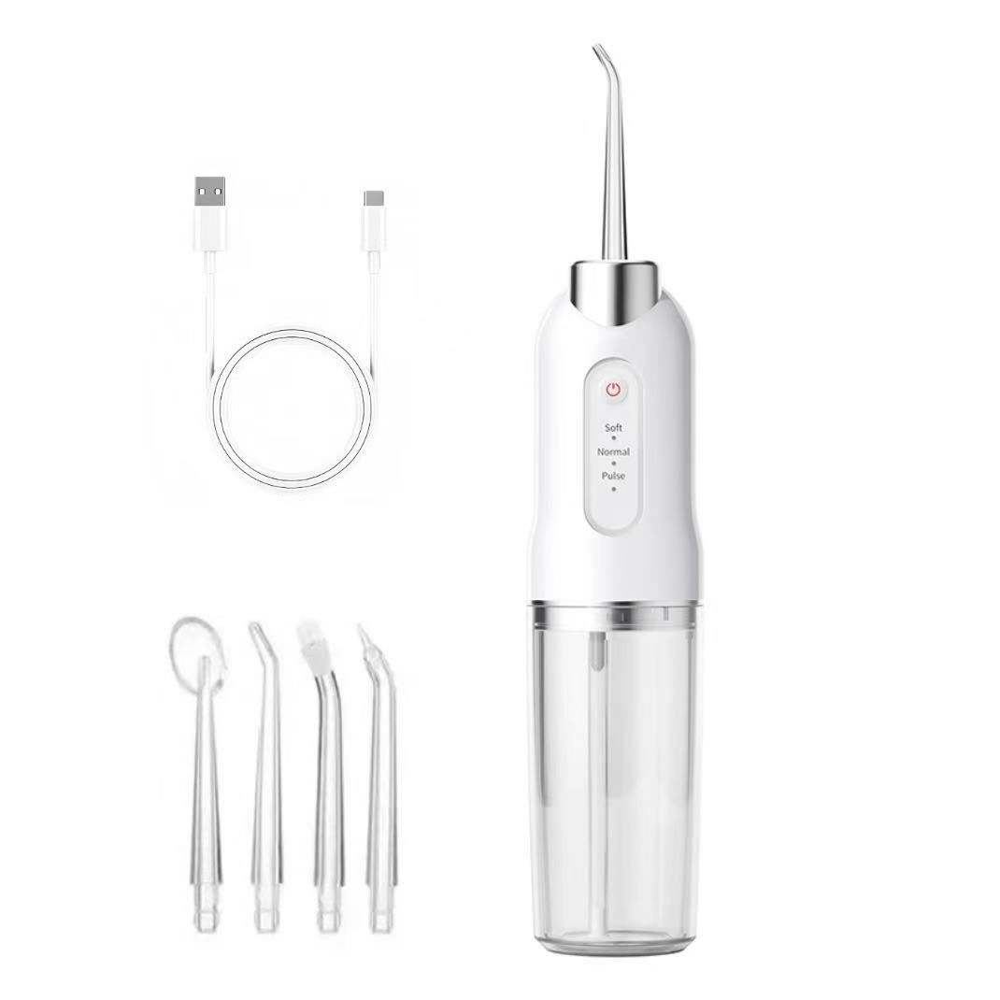
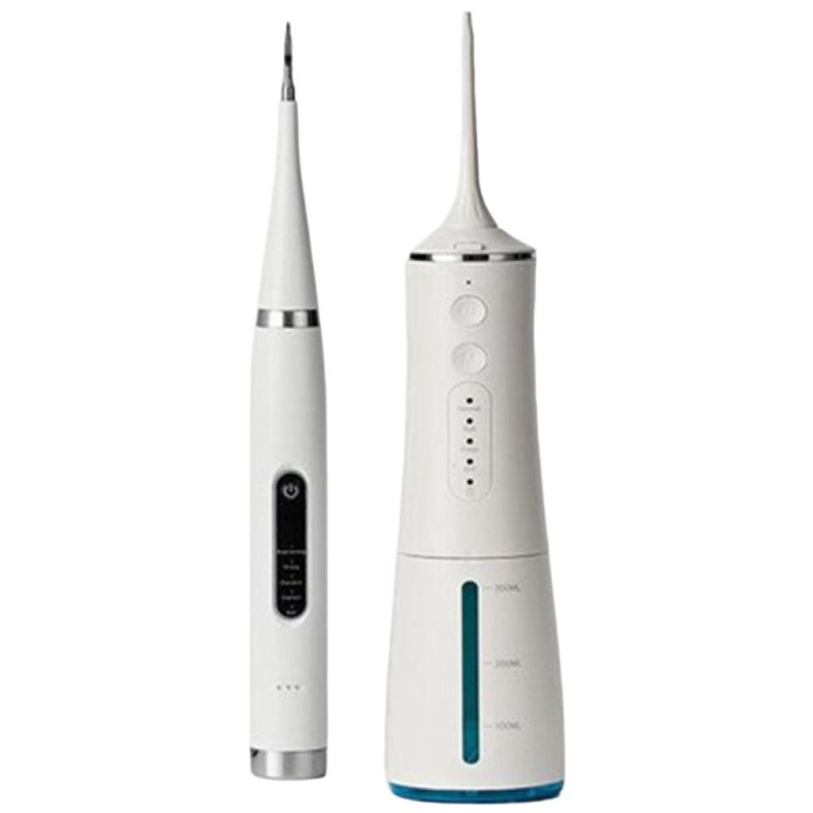
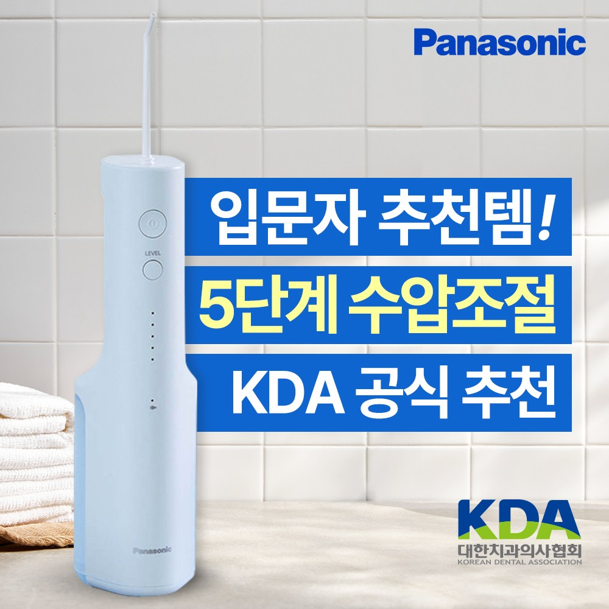

홈 › 제품리뷰 › 뷰티/헬스
구강세정기, 가성비냐 파나소닉이냐
작성: 생활서식 모음 · 2026-08-22

파트너스 활동의 일환으로 일정액의 수수료를 지급받습니다
🛒 오늘의 쿠팡 특가 보러가기 →
구강세정기, 치실 대신 물로 치간 씻으려는데 뭘 살까요?
핵심은 "수압(세정력)과 방수, 휴대" 3대 를※ 잇몸·치아 질환이 있으면 사용 전 치과와 상담하세요.
📋 목차
구강세정기, 가성비냐 파나소닉이냐 — 결론 먼저 스펙 비교표: 한눈에 보기 구강세정기 고를 때 봐야 할 3가지 가성비냐 브랜드냐, 뭘 사야 할까? 자주 묻는 질문 (FAQ) 결론: 한 줄 요약
구강세정기, 가성비냐 파나소닉이냐 — 결론 먼저
구강세정기는 "수압(세정력)과 방수·휴대" 로 갈려요.휴대용 가성비 , 가족이 나눠 쓰면 1+1 세트 , 브랜드 완성도면 파나소닉 이 무난합니다.
1 가성비·휴대 (가성비 초이스)
가성비

휴대용 가성비
1. AOSS 방수 휴대용 무선 구강세정기 (+전용팁 4종)
1+1·브랜드는 아니어도
추천 대상
구강세정기를 저렴하게 처음 써보려는 분 무선·방수로 욕실·여행에 쓰려는 분 전용팁이 여러 개 필요한 경우 장점
1만원대로 부담 없이 구강세정기 입문 무선·방수라 욕실·휴대 사용이 편함 전용팁 4종이라 가족이 팁을 구분해 사용 단점
이 제품은 가성비·휴대용 입니다. 두 개 필요하면 2번 1+1, 브랜드 완성도면 3번 파나소닉으로 가세요. "입문"이면 가성비 좋아요.
한줄 리뷰
"저렴하게 휴대용으로 시작"이면 AOSS가 무난합니다. 방수라 편해요. 완성도·브랜드면 2·3번을 보세요.
주요 스펙
제품: AOSS 휴대용 무선 구강세정기 기능: 무선·방수 구성: 전용팁 4종 배송: 로켓배송 가격: 약 13,500원 (변동 가능) ※ 실제 스펙·가격과 차이가 있을 수 있습니다
2 2개·가족 (베스트 초이스)
베스트

1+1 세트
2. 원웨이 워터 구강세정기 1+1 (휴대용 물치실)
두 개라 가족이 나눠 쓰는
추천 대상
부부·가족이 각자 하나씩 쓰려는 분 무선 휴대용을 두 개 저렴하게 갖추려는 분 치실 대신 물로 치간을 씻으려는 분 장점
1+1이라 두 개를 개당 저렴하게 마련 가족이 각자 하나씩 위생적으로 사용 무선·휴대라 세면대·여행에 편함 단점
저렴한 한 개면 1번, 브랜드 완성도면 3번 파나소닉입니다. 2번은 "1+1 두 개" 의 실속 구간 — 가족용에 가장 무난합니다.
한줄 리뷰
"부부·가족이 각자 하나씩"이면 1+1이 좋습니다. 개당 저렴해요. 완성도·브랜드면 3번을 보세요.
주요 스펙
제품: 원웨이 워터 구강세정기 1+1 구성: 2개 세트 기능: 무선 휴대 배송: 일반배송 가격: 약 89,900원 (변동 가능) ※ 실제 스펙·가격과 차이가 있을 수 있습니다
3 브랜드·완성도 (프리미엄)
프리미엄

파나소닉
3. 파나소닉 휴대용 무선 구강세정기 (EW-DJ26, IPX7)
파나소닉 완성도와 IPX7 방수로
추천 대상
검증된 브랜드로 믿고 쓰려는 분 IPX7 방수로 욕실에서 안심하고 쓰려는 분 완성도·내구를 중시하는 분 장점
파나소닉이라 완성도·내구가 좋음 IPX7 방수라 욕실 물 사용에 안심 수압·사용감이 안정적 단점
저렴한 휴대용이면 1번, 두 개 필요하면 2번 1+1이 합리적입니다. 3번은 파나소닉 완성도+IPX7 방수 를 원하는 분에게 값어치가 있습니다.
한줄 리뷰
"검증된 브랜드로 완성도까지"면 파나소닉이 좋습니다. 믿을 만해요. 저렴·다개수면 1·2번이 합리적입니다.
주요 스펙
제품: 파나소닉 휴대용 무선 구강세정기 EW-DJ26 방수: IPX7 특징: 휴대·완성도 배송: 로켓배송 가격: 약 119,000원 (변동 가능) ※ 실제 스펙·가격과 차이가 있을 수 있습니다
스펙 비교표: 한눈에 보기
가격·풍량·무게 중 본인에게 중요한 기준부터 보세요. "최고" 표시는 3제품 중 객관적 1위 값입니다.
← 좌우로 스크롤 →
구강세정기 고를 때 봐야 할 3가지
수압·방수만 챙겨도 후회가 적습니다.
1) 수압·모드 — 세정력
수압 단계가 여러 개면 잇몸 상태에 맞춰 조절 가능 처음엔 약한 수압부터 시작하는 것이 좋음 펄스(맥동) 모드 등 사용감도 참고 2) 방수·충전 — 사용 환경
욕실에서 쓰므로 방수 등급(IPX7 등) 확인 충전식·물통 일체형이 휴대에 편함 한 번 충전으로 며칠 쓰는지도 참고 3) 물통·팁 — 편의
물통이 크면 자주 안 채워도 되지만 부피가 큼 휴대용은 물통이 작아 자주 채워야 함 교체 팁·가족용 팁 구분이 위생에 좋음 가성비냐 브랜드냐, 뭘 사야 할까?
사용 환경과 인원만 정하면 답이 나옵니다.
가성비·휴대: 1번 AOSS → 저렴하게2개·가족: 2번 1+1 → 나눠 쓰기브랜드·완성도: 3번 파나소닉 → 믿고자주 묻는 질문 (FAQ)
Q1. 구강세정기가 치실을 완전히 대체하나요? 보조 수단으로 유용하지만 완전 대체 여부는 견해가 갈립니다. 물줄기로 치아 사이·잇몸 라인의 음식물을 씻어내 치실이 닿기 어려운 부위 관리에 도움이 되지만, 치실의 물리적 제거와는 방식이 다릅니다. 치실과 병행하거나 상황에 맞게 쓰는 것이 좋고, 잇몸·치아 상태가 걱정되면 치과와 상담하세요.
Q2. 수압은 세게 쓸수록 좋은가요? 아닙니다. 처음부터 강한 수압을 쓰면 잇몸이 자극받거나 출혈이 생길 수 있으니 약한 단계부터 시작해 익숙해지면 조절하세요. 잇몸이 약하거나 질환이 있으면 낮은 수압으로 부드럽게 사용하고, 통증·출혈이 지속되면 치과 상담이 필요합니다.
Q3. 휴대용과 거치형 중 뭐가 나은가요? 사용 환경에 따라 다릅니다. 휴대용은 무선·소형이라 욕실·여행에 편하지만 물통이 작아 자주 채워야 합니다. 거치형(대용량)은 물통이 커서 오래 쓰지만 세면대에 고정해 써야 합니다. 여행·간편함이면 휴대용, 집에서 넉넉히면 거치형이 어울립니다.
Q4. 방수 등급은 왜 중요한가요? 욕실에서 물과 함께 쓰기 때문입니다. IPX7 등 방수 등급이 높으면 물에 젖거나 잠겨도 안전해 세면대·샤워 중에도 안심하고 쓸 수 있습니다. 방수가 약하면 고장 위험이 있으니, 욕실 사용이 잦다면 방수 등급을 확인하세요.
Q5. 팁(노즐)은 얼마나 자주 교체하나요? 칫솔모처럼 주기적으로 교체하는 것이 좋습니다. 팁이 마모되거나 오래되면 위생상 좋지 않으니 몇 개월에 한 번 교체를 권합니다. 가족이 함께 쓰면 각자 색이 다른 팁으로 구분해 개인별로 사용하는 것이 위생적입니다.
결론: 한 줄 요약
1) AOSS 휴대용 — 약 13,500원 / 가성비·휴대. 저렴+방수.2) 원웨이 1+1 — 약 89,900원 / 2개·가족. 나눠 쓰기.3) 파나소닉 EW-DJ26 — 약 119,000원 / 브랜드·완성도. IPX7.이 포스팅은 쿠팡 파트너스 활동의 일환으로, 이에 따른 일정액의 수수료를 제공받습니다.